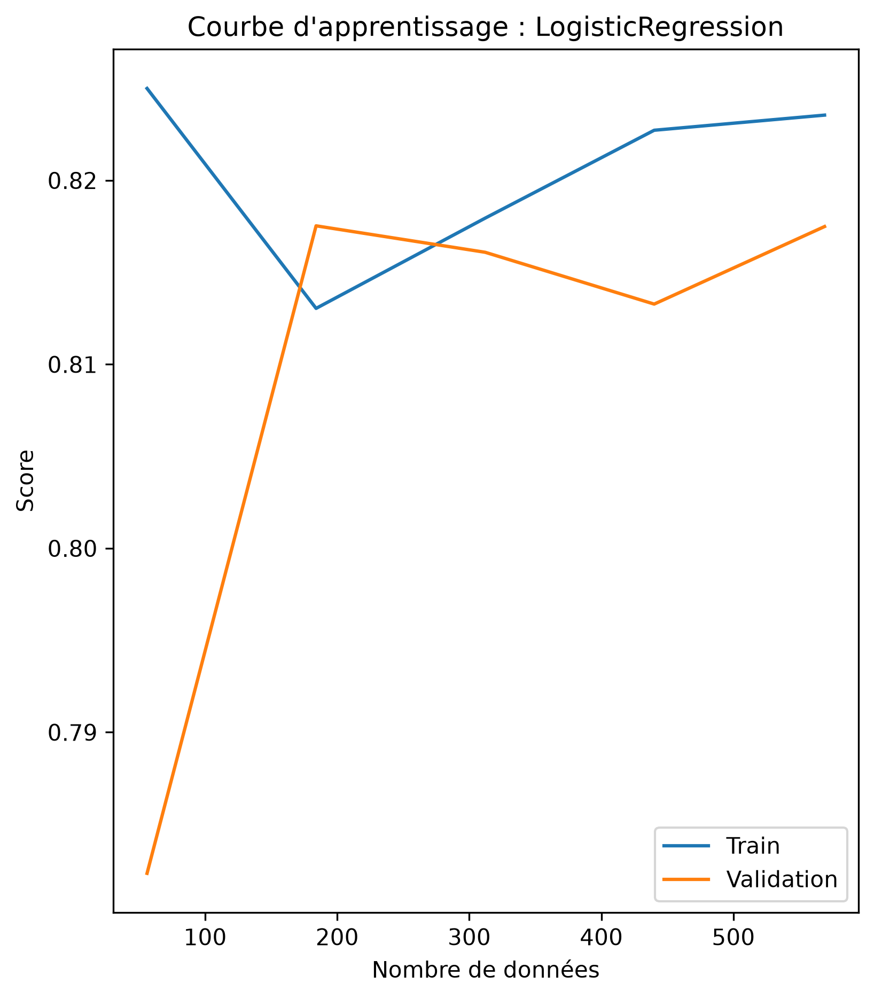

Prédire la survie des passagers du Titanic : un workflow complet de Data Science, de l'exploration au modèle optimisé
Projet académique — Licence 3 Informatique, UAM
Développer un modèle capable de prédire si un passager du Titanic a survécu (classification binaire) à partir de ses caractéristiques (classe, âge, sexe, tarif, port d'embarquement...). Le projet met en pratique l'intégralité du cycle de vie d'un projet Data Science : exploration, prétraitement, entraînement, comparaison, optimisation et sauvegarde du modèle.
Le projet est organisé en 3 notebooks structurés : 01_EDA (analyse exploratoire), 02_Preprocessing (prétraitement) et 03_Modelisation (modélisation et évaluation), avec du code modulaire dans src/ et le modèle final sauvegardé dans models/.
5 modèles de classification testés et comparés — puis optimisation du meilleur via GridSearchCV avec validation croisée à 5 plis :
| Modèle | Accuracy | F1-score (classe 1) |
|---|---|---|
| Régression Logistique ★ | 0,84 | 0,78 |
| KNN | 0,83 | 0,77 |
| SVM | 0,83 | 0,75 |
| Arbre de Décision | 0,82 | 0,76 |
| Random Forest | 0,82 | 0,74 |
